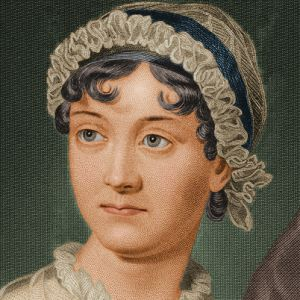

Pride & Prejudice
About the writer
The writer of this novel is Jane Austen. She was born in England in 1775. She started writing the Pride and prejudice manuscript when she was a teen. The publishers rejected her manuscript of the neovel. She reviewed the novel again and completed its final form. The novel was published in January 1813. Two years after her first novel called Sense and Sensibility. She is one of the famous writers among today.
Jane Austen have Written lot of nevels that are popular today. The novels she wrote are: Sense and sensibility, Emma, persuation, Nothanger Abbey, Lady Susan and many other books.
Story

Mr.Bennet is a father of five daughters. In early day women are no eligeble own land or money, its only men. Because of this Mr.Bennet daugter cannot inherit their fatehr's land. The novel move around the need of love and marriage, and the conflicts that is happening between the ranks of the people who live.
One of the theme in Pride and Prejudice by Jane Austen is how class values affect love and marriage. In 19 century, a persons worth was juged by their wealth and social presttige. Most of the marriages in the novel are based on not on love but on wealth and social prestiege
There are several marriage or probable marriages in the story. The marriage between Mr.Bennet and Mrs.Bennet,Colline and Charlotte, Lydia and Wickham, Darcy and Elizebeth,and Bingly and Jane.
The marriage life of Mr.Bennet and Mrs.Bennet is portrayed as not equal. Mr.Bennet is educated, so allways is presented as a man with gentle qualities. However, Mrs.Bennet is presented as uneducated,uncultured but a bossy women. As a result, Mr.Bennet allways seems to laugh at Mrs.Bennet's unruly behaviour. So their dosen't seems to be a genuine love between Mr.Bennet and Mrs.Bennet. The lack of love between the two is because of class values in the society
Another example the marriage between Collins and Charlotte. They dont marry because of love but only because of they want survive. Collins first proposes to Miss.Bennet then to Elizebeth. Here he tries to marry them not because of his love. He consider their love either. Instead, he tries to use his influence as the next heir to their property. When he fails in his attempts he proposes to Charlotte. In turn, Charlotte marries Collins not because of love but for mere survival.
Even the marriage between Lydia and Wickham is not based on love. Wickham marries her on the condition on the promise that Mr.Bennet would give him money. The marriage between Mr.Bingly and Bennet is delayed because of their class inequlities. However, their marriage is based on love. The writer shows the marriage between Darcy and Elizebeth as anideal relationship sience it is based on love and equal undestanding.
Characters:- Fitzwilliam Darcy
- Jane Bennet
- Charles Bingly
- Mr.Bennet
- Mrs.Benner
- Geroge Wickhan
- Lydia Bennet
- Mr.Collins
- Miss Bingley
- Lady Catherine de Bourgh
- Mr. and Mrs.Gardiner
- Charlotte Lucas
- Georgiana Darcy
- Mary Bennet
- Catherine Bennet
- Love
- Marriage
- Wealth
- Class
- Self knowledge
- Style
More information:
Visit this link to buy her books
Visit this link for more information
Citations:
Pride and Prejudice. (n.d.). Retrieved February 14, 2017, from http://www.sparknotes.com/lit/pride/characters.html
Jane Austen. (2016, August 08). Retrieved February 22, 2017, from http://www.biography.com/people/jane-austen-9192819
Pride & Prejudice (2005). (n.d.). Retrieved February 22, 2017, from http://www.imdb.com/title/tt0414387/
----------------------------------------------------------------------------------------------------------------------
Go to top